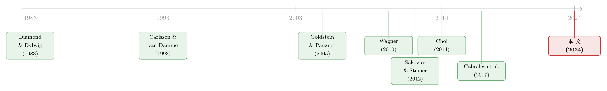

异质性，反而是金融体系的「稳定器」？
本文读的是 Goldstein, Kopytov, Shen & Xiang (2024, Journal of Financial Economics)：在一个银行各自会被挤兑、又通过「火线抛售」彼此相连的模型里，作者证明了一个相当反直觉的结论——只要银行之间还互相连着，让它们变得更「不一样」（提高异质性），就能同时让强银行和弱银行都更稳。于是，降低资产同质化、强制披露银行特异信息，乃至「一刀切」的资产购买与流动性要求，都能通过抬高异质性来增进金融稳定。
1 引言：一个被算反了的直觉
2007–2008 年那场全球金融危机之后，监管者和学界最揪心的一件事，是金融机构之间「风险的相关性」。政策制定者（Haldane, 2009；Yellen, 2013）反复强调：很多银行一起倒下，才是对实体经济真正的威胁。于是一大批系统性风险度量被造了出来，它们几乎无一例外地盯着机构之间的「尾部共动」（tail comovement）——Adrian and Brunnermeier (2016) 的 CoVaR、Acharya et al. (2017) 的度量、Brownlees and Engle (2017) 的 SRISK，都是这个思路。
但有一个问题，长期以来没被问清楚：银行之间相关性更高，到底会不会让它们整体上更容易倒？
这个问题为什么关键？想象一下，如果银行更相关，确实更容易「一起死」，但与此同时它们「单个死」的概率反而下降了——那么共动对金融脆弱性的含义，其实就被大大稀释了。换句话说，如果你只盯着「会不会一起倒」，却没算清「整体倒不倒」，你可能会把政策的方向搞反。
首先要承认，已有理论确实给出了一个广为接受的图景。在那些模型里，系统性风险和单个机构的风险之间存在一种此消彼长的张力：随着互联性上升，银行更可能一起失败，但弱银行单独失败的概率却下降了（如金融网络里的 Cabrales et al., 2017，银行披露里的 Bouvard et al., 2015）。也就是说，多样化（diversification）减少了系统性崩溃，代价是让一些弱银行更容易单独出事——是否要分散，取决于冲击的分布长什么样。
接着，一个自然的问题是：这个「张力」是不是普适的？这篇论文给出的答案是——它不是。作者构建的模型里，这种张力根本不存在：异质性更大，会让每一家银行（无论强弱）都更稳，因而整个系统也更稳。没有取舍，没有「牺牲谁成全谁」。
这正是本文最值得玩味的地方。它不是又造了一个系统性风险度量，而是把「相关性 → 脆弱性」这条因果链里，被前人默认成「负相关」的那一段，重新算成了「正相关」：异质性是金融稳定的第一性变量。忽略政策对异质性的影响，你对政策效果的评估就会失真。
2 模型设定：两类银行，一个共同的抛售市场
要把这个反转讲清楚，得先把模型的骨架摆出来。这是一篇彻头彻尾的理论文章，所以我们慢一点、把每一块积木对齐论文的原始记号。
经济里有三类风险中性的主体：银行、银行的投资者、外部投资者。三期 \(t=0,1,2\)，无贴现。
银行与基本面。 有一个连续统的银行，指标 \(i \in [0,1]\)。在 \(t=0\)，每家银行从单位质量的投资者那里募得 1 单位资本，形式是可即时赎回的债务（demandable debt），并投入长期项目。项目在 \(t=2\) 的毛回报为
$$ z_i = \theta + \zeta_i $$
这里 \(\theta\) 是所有银行共享的总量成分（aggregate component），\(\zeta_i\) 是银行特异成分（bank-specific component）。总量基本面 \(\theta\) 的累积分布函数 \(F_\theta(\cdot)\) 支撑在 \([\underline\theta, \bar\theta]\) 上，其中 \(\infty \ge \bar\theta > \underline\theta > 0\)。特异冲击 \(\zeta_i\) 是零均值随机变量，以相等概率取 \(\eta \ge 0\) 和 \(-\eta\)，并约束 \(\underline\theta - \eta > 0\)（保证每家银行的生产率始终为正）。
到了 \(t=1\)，冲击实现，银行就此分成两类、且质量相等：
$$ \text{strong banks: } \zeta_i = \eta, \qquad \text{weak banks: } \zeta_i = -\eta. $$
参数 \(\eta\) 度量强弱银行事后表现的差距，作者称之为资产离散度（asset dispersion）。从事前看，\(\eta\) 决定了银行基本面两两之间的相关性：
$$ \mathrm{Corr}(z_i, z_j) = \frac{\mathbb{V}\theta}{\mathbb{V}\theta + \mathbb{V}\zeta_i} = \frac{\mathbb{V}\theta}{\mathbb{V}\theta + \eta^2}. $$
这个式子很关键。\(\eta\) 越大，特异冲击 \(\zeta_i\) 的方差 \(\eta^2\) 越大，总量冲击的相对重要性就越低，于是银行 \(i\) 和 \(j\) 的回报越不相关。所以「提高 \(\eta\)」，在事前语言里就是「降低银行间相关性」。请记住这一点——它是后面所有政策结论的翻译器。
抛售市场与火线外部性。 这是模型的第二根支柱。在 \(t=1\)，如果有质量为 \(m_i\) 的投资者从银行 \(i\) 提前赎回，银行 \(i\) 就得筹到 \(m_i\) 的钱，办法是按一个内生的清算价格 \(p_i\) 卖掉 \(m_i / p_i\) 单位的长期投资。
谁来接盘？一个竞争性的、由单位质量同质外部投资者构成的资产市场。但这里的关键摩擦是：流动性是稀缺的。要买下一篮子银行资产 \(\{k_i\}_{i\in[0,1]}\)，外部投资者得筹集 \(L = \int p_i k_i \, di\) 单位的外部资金，并为此付出一个融资成本 \(g(L) \ge L\)。作者用一个简洁的函数形式概括它：\(g(\cdot)\) 严格递增、严格凸，\(g(0)=0\)，\(g'(0)=1\)。凸性刻画的是流动性的边际成本递增——你想一次买得越多，每一块钱就越贵。利差 \(g(L) - L\) 就是金融摩擦（如代理成本）造成的真实资源损失。
这一步是整篇文章的「连接器」。不同银行虽然各自独立地面对挤兑，但它们卖资产卖给的是同一群买家、抢的是同一池流动性。一家银行抛得多，把 \(L\) 推高，\(g'(L)\) 随之上升，所有银行的清算价格就一起被压低——这就是跨银行的火线抛售溢出（fire-sale spillover）。
3 火线抛售如何定价：把 Lemma 一步步推出来
外部投资者的最优化问题，正是清算价格的来源。它解的是：
我们把它一步步解开，看看火线折价是怎么冒出来的。
第一步，写出一阶条件。 对某只银行资产的购买量 \(k_i\) 求偏导，令 \(L = \int p_j k_j \, dj\)，得到
$$ z_i - g'(L)\, p_i = 0. $$
直觉是：多买一单位银行 \(i\) 的资产，收益是它的基本面价值 \(z_i\)，成本是为这一单位多付的价格 \(p_i\) 乘以边际融资成本 \(g'(L)\)。两者相等时外部投资者才肯接盘。
第二步，解出清算价格。
$$ p_i = \frac{z_i}{g'(L)}. $$
这是整个抛售市场的核心。由于 \(g\) 是凸的、\(g'(0)=1\)，只要市场上有任何抛售（\(L>0\)），就有 \(g'(L) \ge 1\)，于是
$$ p_i = \frac{z_i}{g'(L)} \le z_i. $$
价格低于基本面价值——这就是火线折价（fire-sale discount）。而且折价的深浅 \(g'(L)\) 是所有银行共同决定的：你卖、我卖、大家一起卖，\(L\) 越大，\(g'(L)\) 越高，每个人手里资产的成交价就越惨。这正是「外部性」二字的全部含义。
第三步，市场出清。 配合清算条件 \(m_i = p_i k_i\)，连同投资者的「瞌睡」设定（以概率 \(\bar m \in (0,1)\) 清醒、可赎回，以概率 \(1-\bar m\) 瞌睡、忽略赎回，故银行至多清算 \(\bar m / p_i\) 比例的资产，且假设 \(\bar m / p_i \le 1\) 以排除彻底倒闭），就能把火线抛售完整地嵌进每家银行的赎回博弈里。
到这里，模型的两层结构就齐了：银行内部，提前赎回的人逼着银行贱卖资产、把损失甩给留下的人——这是教科书式的 Diamond and Dybvig (1983) 内部互补性；银行之间，所有银行共用一个 \(g'(L)\)，一家的抛售抬高了别家的折价——这是跨行互补性。
4 核心机制：两层互补性「互相点火」
现在到了真正关键的一步。前人模型里，要么只有银行内部的挤兑互补性，要么只有跨行的溢出，二者分开看。本文的贡献，是让这两层战略互补性（strategic complementarity）彼此放大——用作者的话说，mutually reinforcing。
跟所有金融脆弱性模型一样，投资者的赎回决策由挤兑门槛（run threshold）刻画：当且仅当总量基本面 \(\theta\) 跌破某个银行特异的门槛时，挤兑发生。门槛越低，说明越难被挤兑，脆弱性越低。所有门槛在均衡中联立决定——因为一个投资者要不要跑，取决于她对自己银行和别家银行挤兑情况的信念。
如果没有关于 \(\theta\) 的不确定性，带战略互补性的模型通常有多重均衡，同一个政策在不同均衡里效果天差地别。作者用全局博弈（global games，Carlsson and van Damme, 1993；Rochet and Vives, 2004；Goldstein and Pauzner, 2005）的技术，给投资者的信号加上噪声，从而把均衡唯一地钉死。这一步不只是技术洁癖——它把危机发生的内生概率系在经济基本面上，才使得对各项政策做精确的成本收益分析成为可能。
决定门槛的有两个力量。其一是基本面：强银行受正向特异冲击，更稳，需要更糟的总量冲击才会被挤兑，故门槛更低；弱银行反之。其二是投资者对火线折价的信念：处在赎回边缘的强银行投资者，预期到的折价比弱银行边缘投资者更高——因为强银行真要出事，意味着此刻弱银行已经在经历惨烈的挤兑、市场上抛压如山。这两个力量共同决定了强、弱两类银行的门槛，而两个门槛之间的距离，正是「银行异质性」的度量。
接着，把跨行互补性想清楚：一个投资者，当她预期别家银行的人也在跑的时候，会更担心自己银行被挤兑——因为大家同时抛售会把 \(g'(L)\) 顶上去、把折价做深。于是，
- 如果不同银行的赎回撞在一起（同质化高），跨行火线溢出对稳定性的杀伤最大；
- 如果赎回错峰分散（异质性高），溢出被摊薄、变得不那么致命。
于是反转出现了。核心定理：异质性 \(\eta\) 上升，会同时削弱「内部互补」与「跨行互补」之间的相互点火，让强、弱银行双双更能扛住恐慌性挤兑。机制是这样的——异质性变大，意味着强银行的稳定性被弱银行更大的抛压所挑战（坏处），同时弱银行的脆弱性被强银行更小的抛压所缓解（好处）。关键在于：对弱银行的好处，压倒了对强银行的坏处。为什么？正因为弱银行内部本就更脆弱，它的投资者对「火线压力被缓解」这件事更敏感；而强银行投资者对「火线压力被加剧」相对没那么敏感。两层互补性互相放大的副产品，就是这种不对称——于是异质性上升，整体脆弱性下降。
但这个结论有一个自然的边界。当异质性大到一定程度，再增加就没用了。此时强银行投资者确信「所有」弱银行投资者都会跑，弱银行投资者确信「没有」强银行投资者会跑——两类银行实际上断开了连接，火线溢出的强度被固定，异质性不再影响脆弱性。这也呼应了一个直觉：本文的力量，存在于「银行还互相连着」的那段区间里。
5 政策含义：连「一刀切」的救助都能靠异质性见效
理清了「异质性 → 稳定」，接下来的问题顺理成章：监管者怎么影响异质性？ 作者讨论了四种常被纳入金融监管工具箱的政策。
其一，ring-fencing（业务隔离）。 把银行的资产负债表按业务或地理拆成不同部门，会拉大各部门资产回报的离散度——在模型里就是抬高 \(\eta\)。既然异质性有益于所有银行的稳定（除非已经太大），降低资产同质化（如 ring fencing）就能增稳。注意这与既有文献的对照：以往研究（Shaffer, 1994；Wagner, 2010, 2011；Ibragimov et al., 2011）聚焦于基本面违约的级联，结论是资产差异化以「更多弱银行单独失败」为代价换取「更少系统性失败」；而本文聚焦恐慌驱动的挤兑，结论是资产差异化能让强、弱银行双双更扛挤兑——没有那个代价。
其二，强制披露。 这是我个人觉得最精彩的一处反转。作者把模型扩展，给投资者关于银行特异冲击的信息加上噪声。关键洞见是：决定异质性的，是投资者感知到的（perceived）银行间差异，而非物理上的资产同质化。在一个不透明的体系里，投资者分不清强弱，体系实际上退化成同质。强制披露银行特异信息，等于把感知异质性放大，从而稳定整个体系——包括弱银行。这恰恰顶撞了既有结论：Bouvard et al. (2015) 和 Goldstein and Leitner (2018) 认为披露银行特异信息会损害弱银行的稳定；而本文说，披露通过减轻对最脆弱机构的火线压力，能稳住整个金融部门。（与之相邻的另一条线，是同期的 Dai et al. (2024)：他们认为披露银行的系统性风险敞口——而非特异风险——才能缓解脆弱性。两篇放在一起读很有意思。）
顺带一提，社交媒体把「感知」放大、把赎回「撞」到一起的能力，正是本文机制的反面教材——当所有人同时看到同一条坏消息、同时去跑，异质性被瞬间抹平，火线溢出最致命。关于这条「催化剂」逻辑，可参见《四天，一条推特，挤垮一家银行》。
其三，二级市场流动性注入。 2007–2008 和新冠期间被广泛使用。它不改变银行基本面的离散度，却通过重塑投资者对火线折价的信念来影响异质性。令人意外的是：即便注入是广谱的（监管者并不专门买某一类银行的资产），它也倾向于更显著地压低强银行投资者感知到的折价。原因是——强银行开始被挤兑时，往往是弱银行已经被迫狂抛、流动性条件最糟糕的时刻；此时一注流动性，对强银行投资者是雪中送炭，于是抬高了异质性、稳住了系统。而且，基于 2007–2008 年美国银行数据的校准显示，这条「通过改变异质性」的间接渠道并非微不足道（nontrivial）。
其四，流动性要求。 允许银行同时持有现金与长期资产。现金既是赎回缓冲，也能用来接盘别家抛售的资产。和注入类似，由于强银行在更糟的流动性条件下才动用缓冲，同样数额的缓冲对强银行的稳定作用更大——于是流动性要求也能通过抬高异质性来间接增稳。
四个政策里，前两个只通过改变异质性起作用，后两个还有一层直接的稳定效应（降低折价本身就利好银行）。但作者反复强调的是：即便是「一刀切」的广谱政策，也能通过异质性这条渠道见效——这正是把两层互补性的「相互点火」算清楚之后，才能看见的新含义。
6 文献脉络：从 Diamond–Dybvig 到「异质性即稳定」
把这篇论文放进谱系里，它站在两条大河的交汇处。
第一条河，是战略互补性与恐慌挤兑。源头是 Diamond and Dybvig (1983)——银行因提供流动性转换而天然脆弱。但纯粹的互补性模型有多重均衡的烦恼，于是 Carlsson and van Damme (1993) 开创的全局博弈被引入，经 Morris and Shin (1998) 用于货币危机、Rochet and Vives (2004) 与 Goldstein and Pauzner (2005) 用于银行挤兑，把均衡唯一地钉死。Sákovics and Steiner (2012) 进一步处理了异质主体的协调问题——但他们的「拉普拉斯性质」意味着，提高异质性对投资者平均的赎回决策没有影响（弱银行投资者的乐观恰好被强银行投资者的悲观抵消）。本文的突破，恰恰是打破了这种抵消：在两类互相作用的互补性下，整体脆弱性取决于关于「火线压力与挤兑之交互」的加权平均信念，而这些交互项在两类银行间不对称、且随异质性变化。
第二条河，是火线抛售的传染。Cifuentes et al. (2005)、Diamond and Rajan (2005) 强调了有限流动性池造成的跨行溢出，Uhlig (2010) 给出了折价的微观基础。在这条线上，离本文最近的是 Choi (2014)——他主张监管者该「扶强不扶弱」，因为强银行的脆弱性在边际上影响弱银行、反之则不然。本文的关键不同在于：在这里，强弱银行的脆弱性总是同时相互影响，而正是两层互补性的「相互点火」（这一项在 Choi 中缺席），让异质性对所有银行都有益。

还有一条与本文形成最直接对照的支线，是资产同质化与系统性风险（Shaffer, 1994；Acharya, 2009；Wagner, 2010, 2011；Ibragimov et al., 2011；Allen et al., 2012；Cabrales et al., 2017；Kopytov, 2023）。这些工作盯的是相关的基本面违约，强调「单个失败 vs. 系统危机」的取舍；比如 Cabrales et al. (2017) 说，若负向冲击预期较小，全分散是社会最优，冲击大时则资产离散有益——是否分散，取决于分布。本文把镜头切到恐慌性挤兑，给出的答案干净得多：要紧的是银行异质性（挤兑在银行间的离散），而非资产回报的离散；而且无论冲击分布如何，资产离散都能降低所有银行的挤兑概率。这一点，与 Huang et al. (2009) 的实证发现一致——大型美国银行间资产相关性的上升，会推高它们各自的违约概率。
7 评论与延伸（Q&A + 研究方向）
(a) 几个可能的疑问
Q：「异质性」和「资产离散度」到底是不是一回事？
不是，这正是本文的精微之处。资产离散度是参数 \(\eta\)（基本面回报的事后差距）；而异质性是两类银行挤兑门槛之间的距离，是内生、均衡决定的。\(\eta\) 通过基本面和信念两条路影响门槛，但真正决定脆弱性的是门槛的离散，而不是回报的离散。加了披露噪声后更清楚：要紧的是感知的异质性，不透明体系里 \(\eta\) 再大、看不见也等于零。
Q：异质性增稳，会不会只是把风险从弱银行挪到强银行、零和而已？
恰恰不是。前人模型里确有这种「此消彼长」（弱银行单独失败概率反而下降），但本文证明在两层互补性相互点火下，强、弱银行同时变稳。代价并不存在——这是它区别于 Choi (2014) 和整条资产同质化文献的核心断言。
Q：均衡唯一性是不是「假设出来」的便利？
全局博弈的唯一性确实是技术选择，但它有实质回报：把危机概率系在基本面上，才能对政策做精确的成本收益核算。代价是要假设投资者信号结构、并用「瞌睡投资者」设定（\(\bar m / p_i \le 1\)）回避彻底倒闭——后者借自 Chen et al. (2010)，是为了绕开 Goldstein and Pauzner (2005) 指出的「战略替代区」带来的技术麻烦。
Q：为什么广谱的流动性注入会偏向强银行？这不反直觉吗？
因为时点。强银行被挤兑，发生在弱银行已经狂抛、\(g'(L)\) 最高、折价最深的时刻。同一笔注入在「最缺水」时对强银行投资者的边际缓解最大，于是把两类门槛的距离拉开、抬高了异质性。注入「广谱」，效果却「偏心」——这是内生时点造成的，而非监管者刻意为之。
Q：结论有没有边界？会不会异质性越大越好、无限增稳？
有明确边界。异质性大到两类银行「断开连接」后，再增加毫无作用——投资者对另一类银行的挤兑变得确定，火线溢出强度被固定。本文的力量只存在于「银行仍互相连着」的区间里；作者也坦言这种「两组互不作用」的极端，既无趣，也难与近年危机中「市场对各机构健康状况充满不确定」的经验相符。
Q：这套理论只适用于银行吗？
不限于。任何有「可赎回负债」、又在共同市场上抛售的机构都适用——作者明确点到公司债共同基金（Goldstein et al., 2017）。这恰恰把这篇纯理论文章，接到了信用市场流动性的实证议题上。
(b) 几个可能的研究问题与提案
- 公司债基金的「异质性」与赎回脆弱性。
- 【经济故事】把本文机制搬到公司债共同基金：基金持仓越同质、赎回越容易「撞在一起」，火线抛售对所有基金的净值杀伤越大。本文预测——持仓更分化的基金群，整体赎回脆弱性更低。
-
【可行性】中。数据可用（Morningstar 持仓 + CRSP MF 资金流 + TRACE 成交价），可构造基金间持仓重叠度，用赎回潮（如 2020 年 3 月）做事件研究。难点在于把「感知异质性」与「物理持仓重叠」分开，识别需要外生的持仓差异来源。
-
外资持有人是抬高了还是抹平了异质性？
- 【经济故事】外资在压力期常同步撤离（参见《高波动来袭，谁在悄悄换仓？》）。若外资把不同机构的赎回「同步化」，按本文逻辑就是在抹平异质性、放大火线溢出；反之若外资分散且错峰，则增稳。
-
【可行性】中。需要机构层面的外资持有数据（如 TIC、各国央行持有人统计）配合危机期价格，识别上可用各国资本管制或税收冲击作为外资敞口的工具变量。结论是否成立，取决于外资行为究竟是「同步」还是「错峰」——这本身就是个值得先回答的实证问题。
-
强制披露的「异质性效应」能否被直接检验？
- 【经济故事】本文断言披露银行特异信息会增稳，顶撞了「披露伤弱银行」的旧观点。压力测试结果的公布，正是一次准自然实验：披露后，投资者对强弱银行的感知差异（异质性）是否扩大、弱银行的资金流是否反而更稳？
-
【可行性】高。美国 CCAR/DFAST 披露事件清晰，可用银行间存款流、CDS 利差、股价共动做双重差分。识别担忧是披露内容与时点的内生性，但披露规则的分段门槛（按资产规模）提供了断点回归的空间。
-
把「异质性」做成可交易的系统性风险度量。
- 【经济故事】既有度量盯尾部共动，本文说该盯的是「挤兑门槛的离散」。能否用市场数据（如各机构 CDS、隐含违约概率的横截面离散）构造一个「异质性指数」，并检验它对危机的预测力是否优于 CoVaR / SRISK？
- 【可行性】中。数据现成（Markit CDS、期权隐含违约），但「门槛离散」是模型量、不可直接观测，需要一个映射假设把可观测的横截面离散对应到理论门槛上——这一步的稳健性是成败关键。
8 参考文献与我的判断
先说贡献。这篇论文最漂亮的地方，不在于又写了一个挤兑模型，而在于它把「银行内部互补」与「跨行火线溢出」这两层战略互补性焊在一起、让它们互相点火，从而在一个干净的框架里翻转了主流直觉：相关性（同质化）不是通过「让大家一起死」、而是通过「让赎回撞在一起、把火线折价做深」来加剧脆弱性；反过来，异质性是金融稳定的一阶变量。由此长出的政策结论——尤其是「广谱救助也能通过异质性偏向性地见效」「披露能稳住而非拖垮弱银行」——既新颖又可操作。
再说对识别（这里是对结论稳健性）的担忧。其一，全部结论建立在「瞌睡投资者」设定上，它回避了彻底倒闭、也回避了战略替代区；现实中弱银行真的会倒，倒闭的不连续性会不会反噬「异质性总是增稳」的单调结论，值得追问。其二，「广谱注入偏向强银行」依赖于「强银行在流动性最糟时才被挤兑」这一内生时点，它对 \(g(\cdot)\) 的凸性形态相当敏感，校准里这条间接渠道「nontrivial」的判断能有多稳，需要更多分布假设下的稳健性检验。其三，模型把银行合约（可赎回债务）当作外生给定，不微观基础化银行为何发行这种负债——这在评估「改变异质性」的政策福利时，可能漏掉了合约本身的内生反应。
最后说后续想看到什么。我最想看到的，是把这套「异质性即稳定」的理论拉到数据里去证伪：压力测试披露事件提供了一次对「披露 → 异质性 → 弱银行更稳」的近乎直接的检验；而公司债基金的持仓重叠度，则提供了一把把「物理同质化」与「感知异质性」分开的尺子。如果这些实证站得住，那么本文就不只是一个优雅的理论反转，而会真正改写监管者「该盯什么」的清单。
参考文献
- Acharya, V.V. (2009). A theory of systemic risk and design of prudential bank regulation. Journal of Financial Stability 5(3), 224–255.
- Adrian, T., Brunnermeier, M.K. (2016). CoVaR. American Economic Review 106(7), 1705–1741.
- Allen, F., Babus, A., Carletti, E. (2012). Asset commonality, debt maturity and systemic risk. Journal of Financial Economics 104(3), 519–534.
- Allen, F., Gale, D. (1994). Limited market participation and volatility of asset prices. American Economic Review 84(4), 933–955.
- Bouvard, M., Chaigneau, P., Motta, A.D. (2015). Transparency in the financial system: Rollover risk and crises. Journal of Finance 70(4), 1805–1837.
- Cabrales, A., Gottardi, P., Vega-Redondo, F. (2017). Risk sharing and contagion in networks. Review of Financial Studies 30(9), 3086–3127.
- Carlsson, H., van Damme, E. (1993). Global games and equilibrium selection. Econometrica 61(5), 989–1018.
- Chen, Q., Goldstein, I., Jiang, W. (2010). Payoff complementarities and financial fragility: Evidence from mutual fund outflows. Journal of Financial Economics 97(2), 239–262.
- Choi, D.B. (2014). Heterogeneity and stability: Bolster the strong, not the weak. Review of Financial Studies 27(6), 1830–1867.
- Cifuentes, R., Ferrucci, G., Shin, H.S. (2005). Liquidity risk and contagion. Journal of the European Economic Association 3(2–3), 556–566.
- Dai, L., Luo, D., Yang, M. (2024). Disclosure of bank-specific information and stability of financial systems. Review of Financial Studies 37(4), 1315–1367.
- Diamond, D.W., Dybvig, P.H. (1983). Bank runs, deposit insurance, and liquidity. Journal of Political Economy 91(3), 401–419.
- Diamond, D.W., Rajan, R.G. (2005). Liquidity shortages and banking crises. Journal of Finance 60(2), 615–647.
- Goldstein, I., Kopytov, A., Shen, L., Xiang, H. (2024). Bank heterogeneity and financial stability. Journal of Financial Economics 162, 103934.
- Goldstein, I., Pauzner, A. (2005). Demand-deposit contracts and the probability of bank runs. Journal of Finance 60(3), 1293–1327.
- Huang, X., Zhou, H., Zhu, H. (2009). A framework for assessing the systemic risk of major financial institutions. Journal of Banking & Finance 33(11), 2036–2049.
- Ibragimov, R., Jaffee, D., Walden, J. (2011). Diversification disasters. Journal of Financial Economics 99(2), 333–348.
- Kopytov, A. (2023). Booms, busts, and common risk exposures. Journal of Finance 78, 3299–3341.
- Morris, S., Shin, H.S. (1998). Unique equilibrium in a model of self-fulfilling currency attacks. American Economic Review 88(3), 587–597.
- Parlatore, C. (2016). Fragility in money market funds: Sponsor support and regulation. Journal of Financial Economics 121(3), 595–623.
- Rochet, J.-C., Vives, X. (2004). Coordination failures and the lender of last resort: Was Bagehot right after all? Journal of the European Economic Association 2(6), 1116–1147.
- Sákovics, J., Steiner, J. (2012). Who matters in coordination problems? American Economic Review 102(7), 3439–3461.
- Shaffer, S. (1994). Pooling intensifies joint failure risk. Research in Financial Services: Private and Public Policy 6, 249–280.
- Uhlig, H. (2010). A model of a systemic bank run. Journal of Monetary Economics 57(1), 78–96.
- Wagner, W. (2010). Diversification at financial institutions and systemic crises. Journal of Financial Intermediation 19(3), 373–386.
- Wagner, W. (2011). Systemic liquidation risk and the diversity-diversification trade-off. Journal of Finance 66(4), 1141–1175.